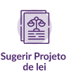

Um político sozinho não faz nada. Pessoas são a chave para qualquer projeto de sucesso, são as suas motivações, ideias e energia que fazem tudo acontecer. Abaixo estão enumeradas as ações que você pode fazer dentro da nossa plataforma:

Construímos juntas e juntos o nosso propósito, valores e ideias para a cidade. Esse movimento segue vivo e qualquer pessoa que se identificar pode contribuir. Cadastre-se!